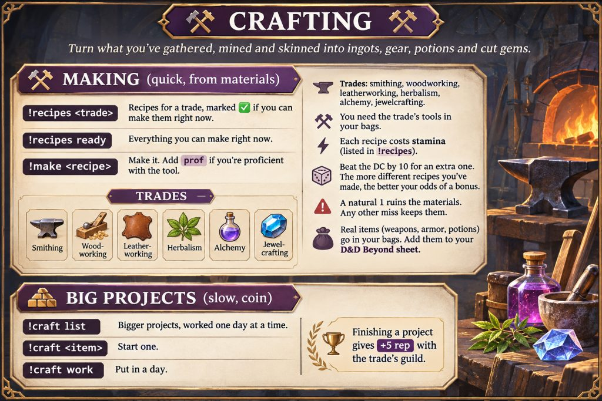

Skinning and crafting
Hunts and gathers supply the raw materials; crafting turns them into gear and guild rep.

Skinning
!skin after a hunt is over, before combat ends (before !i end). It costs 5 stamina, once per character per fight. Survival or Nature against DC 12; a dagger or other blade adds +2. What you get depends on the creature: beasts give hide, bone and sinew; monsters can give fangs, venom sacs, strange hides, ichor, even dragon scales. Everything goes to Materials.
Making (quick, from materials)
!recipes <trade> lists a trade's recipes, marked ✅ if you can make them right now; !recipes ready shows everything you can make. Then !make <recipe> in the crafting channel turns materials into finished goods on the spot. There are six trades, and you need each trade's tools in your bags.
| Trade | Ability | Makes | Guild for !craft projects |
|---|---|---|---|
| Smithing | Strength | Iron, copper, bronze, silver, gold, steel, mithral and adamantine ingots; daggers, sickles, pickaxes, traps, longswords, chain shirts | Hand & Hammer |
| Woodworking | Dexterity | Planks, quarterstaffs, fishing rods, arrows, shields, bows | Hand & Hammer |
| Leatherworking | Dexterity | Tanned leather, pouches, waterskins, backpacks, leather and studded leather armor | Hand & Hammer |
| Herbalism | Wisdom | Potions of Healing and Greater Healing, antitoxin | Unbound |
| Alchemy | Intelligence | Oil, perfume, acid, alchemist's fire, climbing and water breathing potions | Magisterium |
| Jewelcrafting | Intelligence | Cut gems (worth three times the uncut stone), silver lockets, gold rings | None yet |
- Roll the trade's ability, plus your proficiency bonus if you add
prof, plus your tool tier and journal bonus. Each recipe lists its DC and stamina in!recipes <trade>. - Beat the DC by 10 for an extra one. The more different recipes you've made, the better your chance of a bonus item (15% at 10 recipes, up to 35%).
- A natural 1 ruins the materials; any other miss keeps them and costs half the stamina.
- Real items go into your bags. Add them to your D&D Beyond sheet.
!sellonly buys back things you actually made.
Big projects (slow, coin)
!craft is for big projects worked one day at a time at the Workshop. You pay for the materials up front.
| Command | What it does |
|---|---|
!craft list | What you can make, with cost, days of work and DC |
!craft <item> | Start a project (one at a time) |
!craft work | Put in one day of work; add prof if you're proficient with the tool |
!craft | See your current project |
!craft quit | Abandon it. The materials are lost. |
- One work session a day: d20 + the tool's ability (+ proficiency) against the DC. Pass for +1 day of progress, beat it by 5 for +2, and a natural 1 makes no progress.
- Tools you learned with
!traincount as proficient automatically. - Finishing a project gives +5 rep with the guild that owns the trade, outside the daily cap: Hand & Hammer for smithing, leatherworking and carpentry; the Magisterium for alchemy and calligraphy; the Unbound for herbalism; the Wayfarers for cartography.
- The finished item goes into your bags. Add it to your D&D Beyond sheet.